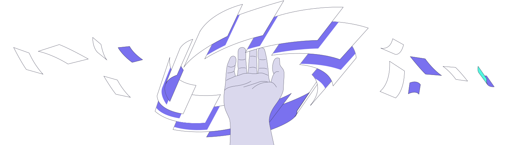

What is ReflectCE
How It Works
FAQ
What is ReflectCE
How It Works
FAQ
Self-directed reflective continuing education, designed to find busy learners where learning happens
Powered by human-centric AI and a growing array of 5000+ connectors to real-life (and work) learning contexts
Learn more
